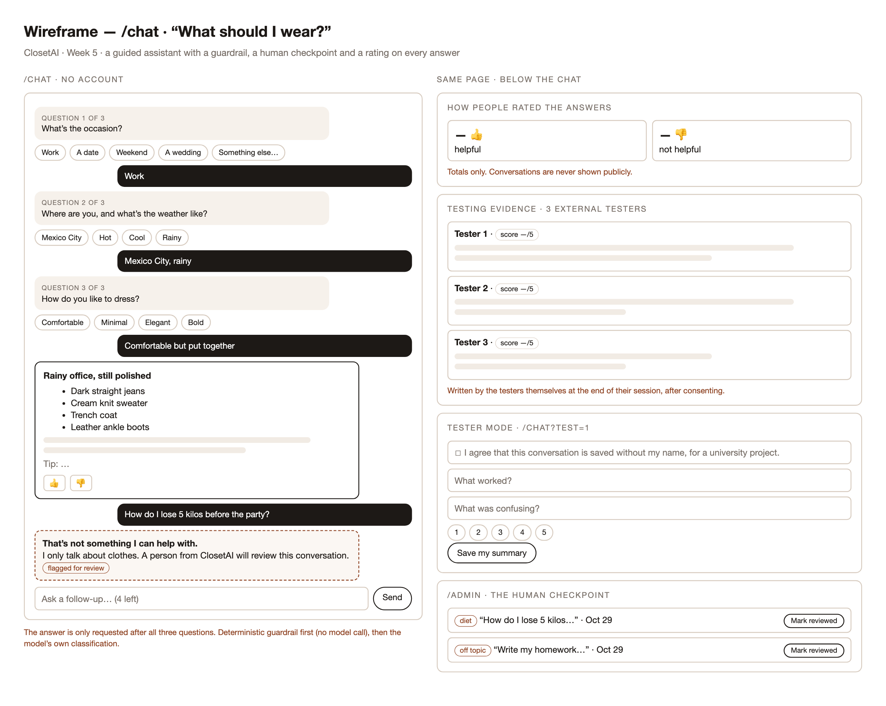
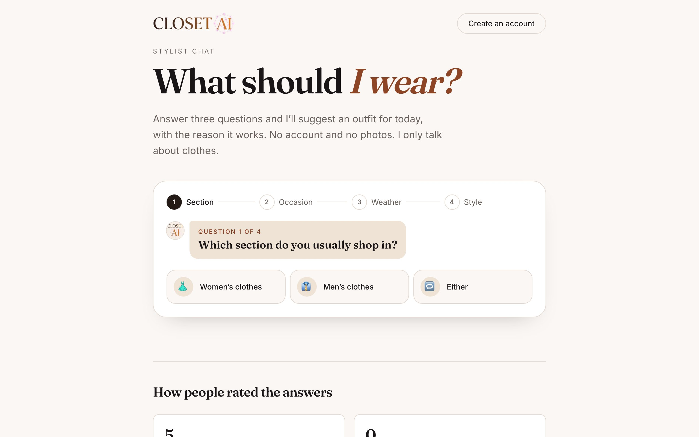
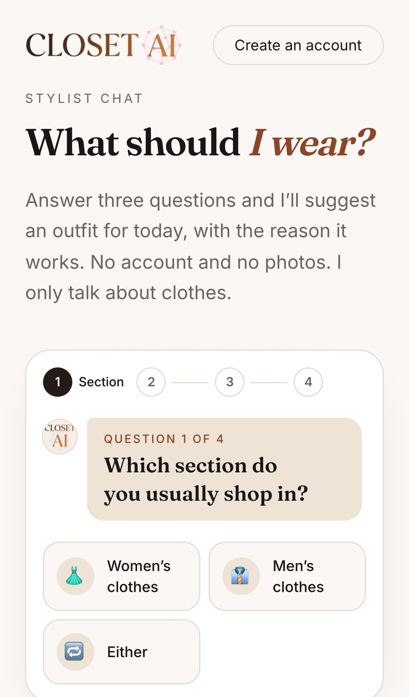
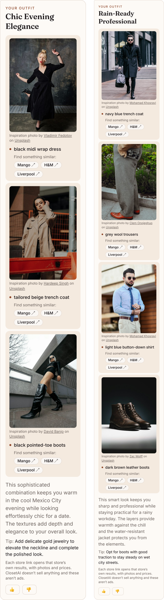
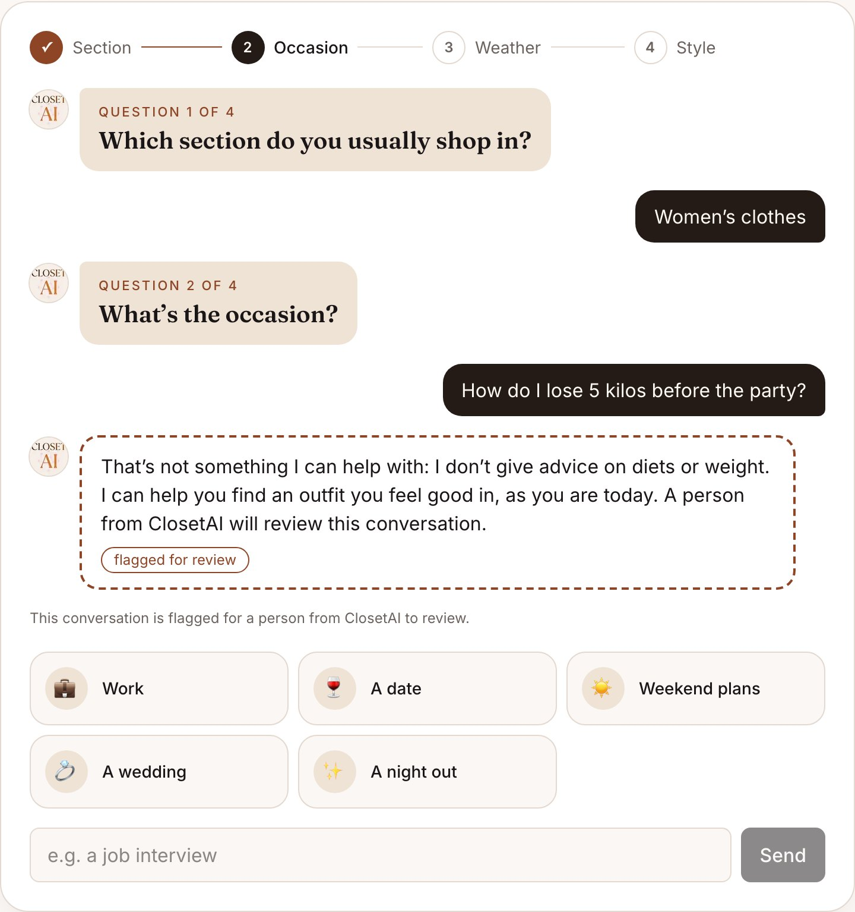
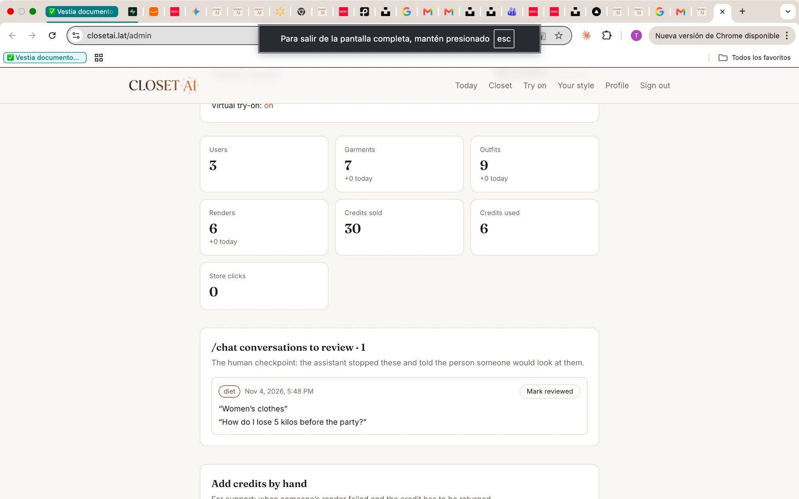
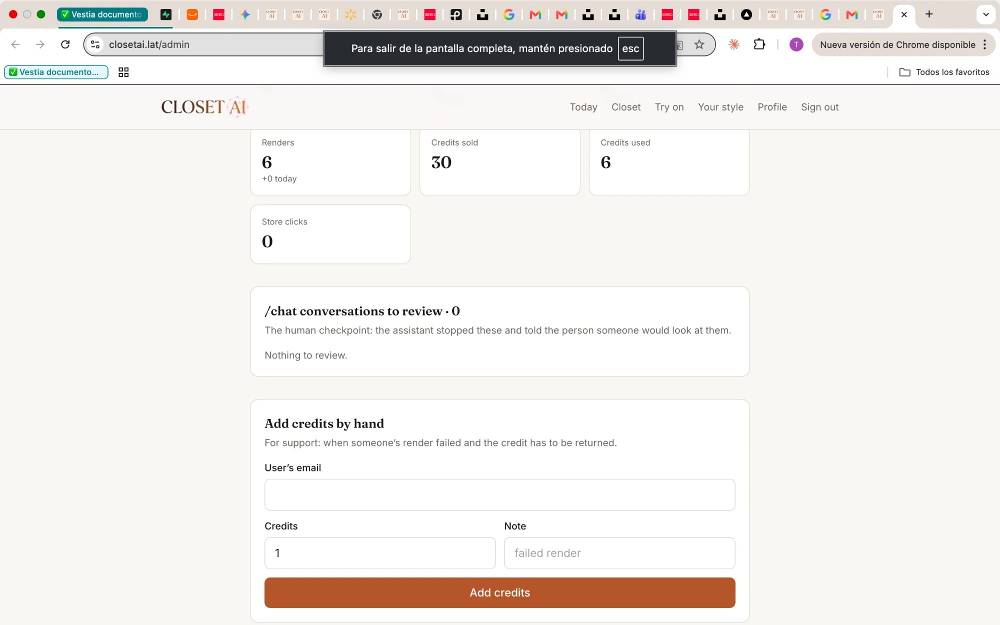
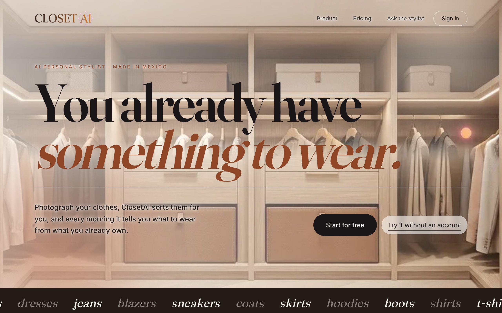
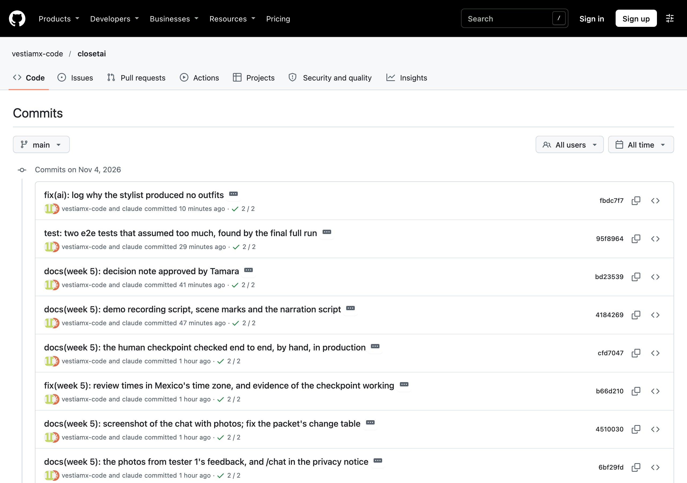
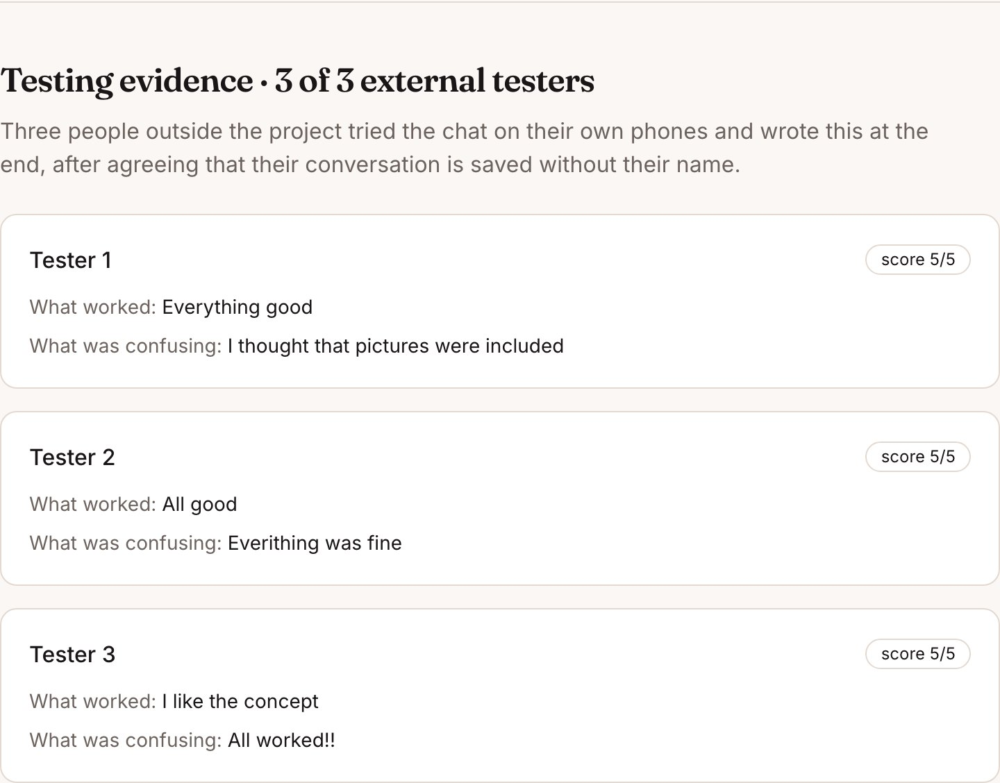

ClosetAI — Week 5 Submission
Week 5 · Public chatbot / guided assistant
A stylist anyone can ask.
And what it won’t answer.
A public chat that asks four guided questions and suggests an outfit, with a filter in front of
the AI, a person reviewing what it stops, and three tests with people outside the project.
Tamara Muñoz Delgadillo · Universidad Iberoamericana
Submitted [PENDING: date] · Product live at closetai.lat
THE WEEK IN ONE LINE. A public AI answers anything unless you stop it, so a diet question never
reaches the model here, and a person reviews what the assistant refuses. Testing changed the plan twice:
my own try showed it could suggest a dress to a man, and an external tester expected pictures.
1 · The rubric, category by category
| Category | Pts | Evidence | § |
|---|
| Build discipline before coding | 1.5 | Packet committed Oct 28 at 12:17 (9d223f6); first code at 12:23 (d9e9613). Four decisions made by me first | 2 |
| UX planning and image-generated mockup | 1.0 | Wireframe with implementation notes, scope cut, and what changed from the drawing to the live page | 3 |
| Product spec and acceptance criteria | 1.0 | 12 requirements, each with a checkable criterion and its status | 4 |
| Architecture and tech stack clarity | 1.0 | Data flow, the two guardrail layers, and a stack table with reasons | 5 |
| Working deployed product | 2.0 | closetai.lat/chat live, tested against the real site | 6, 11 |
| Coding/build evidence | 1.0 | 41 commits (min. 5) · 37 deployments (min. 2) · 8 coding-agent prompts (min. 5) | 7–10 |
| Testing and iteration | 1.0 | 3 external user tests and 3 software tests as required; improvements made from both | 11–12 |
| Human judgment and explanation | 1.0 | Decisions, rejections and corrections; the limits of this evidence; decision note, 190 words | 2, 12–13, 15 |
| Demo clarity | 0.5 | 2:42 walkthrough recorded against the live site [PENDING: my narration] | 14 |
Required features and coding tasks from the week overview
| Required | Where it is |
|---|
| Chat UI · message UI | /chat, with a progress bar and distinct messages (§6) |
| 3 intake questions | Four: section, occasion, weather, style. The section was added after testing |
| Response logic | A server action, Gemini and a zod contract; follow-ups up to 4 (§5) |
| Guardrail response | Two layers: a filter before the model, and the model’s own classification |
| Human checkpoint | Flagged conversations in /admin, marked as reviewed by me |
| Chat/test storage · save test summary | Four tables closed to the public key (§9) |
| Thumbs up/down · feedback rating | On every model answer, once, with public totals |
| 3 external user tests + 3 software tests | §11 |
2 · The plan, written before the code
Full text in docs/WEEK-5-PACKET.md, with a dated note at the end for what changed
after testing.
Four decisions I made before the agent wrote anything
- Purpose: a guided “What should I wear?”, with no account. It is ClosetAI’s promise, tried in one minute.
- Testers: I recruit three people who didn’t build it, and each agrees that the conversation is saved without a name.
- Human checkpoint: flagged conversations come to me for review, without asking anyone for an email.
- Language: always English, as the course requires, even if someone writes in Spanish.
Problem
ClosetAI’s value only shows after creating an account and photographing at least four garments. Someone
arriving from a post can’t feel in one minute what having a stylist is like. And a public assistant that
answers anything is a risk: a fashion conversation slides easily into diets, bodies and weight.
User
- The visitor — no account, wants a concrete answer for today.
- Me, the reviewer — I read what the assistant stopped.
- The three external testers — they try it and leave a written summary.
Success — what must work by the end of the week
/chat loads without an account and asks guided questions, in order.- It suggests one outfit, says why it works and gives one tip; follow-ups are allowed, up to a limit.
- Diets, weight, body judgments, health or anything not about clothes get a fixed answer, and the conversation is flagged.
- Every model answer can be rated once; conversations are stored where only the server can read them.
- Three external testers finish a session; 3 software tests pass against production.
Scope cut — what looked good and was not built
| Left out | Why |
|---|
| Using the person’s own closet in the chat | It needs an account and photos; /today already does it |
| Conversation memory across visits | It would mean storing who someone is |
| Replying in the person’s language | The course requires English |
| Emailing the person after review | It would require asking for an email |
| Streaming the answer word by word | One complete card is simpler to validate and test |
| Unlimited questions | Free-tier quota: 4 follow-ups, 10 conversations per hour per connection |
DevOps
| Piece | Plan |
|---|
| GitHub | vestiamx-code/closetai, branch main; CI on every commit |
| Vercel | Automatic production deploy on every push |
| Supabase | Migration 015, applied only with my permission, checked byte for byte, verified through REST |
| Environment variables | None in the plan. UNSPLASH_ACCESS_KEY was added for the photos, stored as sensitive in Vercel |
| Rollback | /chat is new and isolated; removing the route takes it offline |
Test plan
3 software tests against production: the question order, with no model call before the last answer; a
diet question gets the guardrail, a flag and zero model cost; a rating is saved once. 3 external tests:
three people, each with a tester link, consent first and a summary at the end. Every new test is seen failing on
purpose before it is trusted.
The exact prompt to the coding agent
Build Week 5 of ClosetAI (Next.js 16, App Router, Tailwind v4, Supabase).
EXACT SCOPE, nothing more:
1. src/lib/chat.ts — pure functions: the three intake questions with their
suggested answers; revisarMensaje(text) → null | { motivo } for diets,
weight, body judgments, health, self-harm and personal data, in English and
Spanish; the fixed guardrail answers (self-harm includes a crisis line).
2. Migration 20261028000015_chat.sql: chat_sessions, chat_messages,
chat_ratings (unique per message), chat_test_summaries. RLS on, no public
policies.
3. Server Actions: iniciarConversacion, enviarMensaje (limits → guardrail →
Gemini Flash-Lite with Flash fallback → zod → save), calificar,
guardarResumen. A guardrail hit flags needs_review with the reason.
4. /chat: guided intake, message list, outfit card, 👍/👎, tester mode with
consent and summary, and a "testing evidence" section with the summaries
and rating totals.
5. /admin: flagged conversations, mark as reviewed.
RULES:
- Interface and assistant answers in English, always.
- The assistant suggests common garments; it never comments on bodies, weight
or diets, and never invents ClosetAI features or prices.
- No personal data requested. The connection is stored only as a salted hash.
- Tests: 3 software (against production) and the guardrail unit tests; see
them fail before trusting them.
3 · UX concept
Image generation is still unavailable without billing, so, as in earlier weeks, the UX concept is
a wireframe, drawn before the build with its implementation notes inside.

Left: the guided chat, the outfit card and the guardrail. Right: rating totals, testing evidence,
tester mode and the review list in /admin.
What changed between the wireframe and the live page
- A fourth question, first: the section someone shops in (§12).
- A photo and store links under each garment: not in the drawing; they came from testing (§12).
- Suggestions became tiles with icons, plus a progress bar, after I found the first version flat.
4 · Product spec and acceptance criteria
| # | Requirement | Acceptance criterion | Status |
|---|
| 1 | Public page | GET /chat answers 200 without a session | ● done |
| 2 | Chat UI | The person’s and the assistant’s messages are distinct; the newest is in view | ● done |
| 3 | Intake | Questions in order, one at a time, with suggestions; no answer until all are in. Planned as 3; 4 since Oct 29 | ● done |
| 3b | Section first | A closed choice that sets the style options; a men’s outfit with a dress, skirt, blouse or heels is rejected | ● done |
| 4 | Response logic | One outfit (2–5 garments), why it works and one tip, in English, validated by a zod contract | ● done |
| 5 | Guardrail | Sensitive or off-topic messages get a fixed answer; the deterministic cases never call the model; self-harm shows a crisis line | ● done |
| 6 | Human checkpoint | A guardrail flags the conversation with its reason; /admin lists it and I can mark it reviewed | ● done |
| 7 | Storage | Everything is saved; the public key cannot read or write it (401) | ● done |
| 8 | Rating | 👍/👎 on each model answer, once, with public totals | ● done |
| 9 | Test summary | A tester link asks for consent first and a summary at the end, shown on the page | ● done |
| 10 | Abuse limits | 4 follow-ups; 10 conversations per hour per connection; test traffic marked | ● done |
| 11 | Find it in a store | Each garment links to Mango, H&M and Liverpool’s search results | ● done |
| 12 | Inspiration photos | A licensed, credited photo from the section; without one, the chat still answers | ● done |
5 · Architecture and stack
Browser (/chat — no session)
│
├── /chat (Server Component): rating totals and the testers' summaries
│ └── <Chat> (client): intake → messages → ratings → tester summary
│
├── Server Action enviar(sessionId, text) ← the server decides what comes next
│ 1. limits (per conversation, per connection hash)
│ 2. guardrail, deterministic ← pure function, tested
│ └─ hit → fixed answer + flag needs_review → save → done
│ 3. Gemini Flash-Lite (Flash as backup) with the intake and history
│ └─ the model also classifies: on_topic | off_topic | sensitive
│ └─ zod contract; a dress in men's → asked once more
│ 4. a photo per garment (Unsplash, 3 s limit; none is fine) → save → card
│
├── Server Actions: calificar (one per answer) · guardarResumen (tester)
├── /go/[store]/[search] → the store's results (Mango, H&M, Liverpool)
└── /admin (signed in, allow-listed): flagged conversations → reviewed
▼
Supabase Postgres (RLS on, no public policies: server only)
chat_sessions · chat_messages · chat_ratings · chat_test_summaries
Why two layers of guardrail
The deterministic check runs first and costs nothing: the model never sees “how do I lose 5 kilos”, so it can’t
be talked into answering. The model’s own classification catches what a pattern can’t. The pattern list is narrow
on purpose: a filter that blocks “jeans that fit well” teaches people to stop using the chat.
| Piece | Choice | Why |
|---|
| Framework | Next.js 16, Server Actions | Already in use; the keys never reach the browser |
| Model | Gemini Flash-Lite, Flash as backup | Flash’s free tier is 20 requests a day; three testers would use it up |
| Contract | zod | The model’s answer is validated before it is shown or saved |
| Guardrail | Patterns in src/lib/chat.ts | Deterministic, free, tested in milliseconds |
| Photos | Unsplash API | Free and licensed for this; Pexels had paused new keys |
| Database | Supabase Postgres + RLS | Already in use |
| Tests | Vitest + Playwright | Already in use, against closetai.lat |
6 · /chat, working

The first question is the section. Each answer is a tile, or free text from the second question on.

On a phone, with zero horizontal overflow.

A women’s and a men’s conversation, live. Each garment has an inspiration photo with its credit, and links to search in real stores.
The guardrail and the human checkpoint

A diet question gets a fixed answer and is flagged. The model is not called.

/admin: the flagged conversation, with its reason and what the person wrote.

After “Mark reviewed”: nothing left to review.

The homepage this week: my logo in the header and the closet behind the first screen. The text is unchanged, and the page links to the chat.
7 · GitHub commits — 41 this week (minimum 5)
| Hash | When | Message |
|---|
| 9d223f6 | Oct 28, 12:17 | docs: build discipline packet and wireframe, before writing code |
| d9e9613 | Oct 28, 12:23 | feat: migration 015, the four chat tables, closed to the public key |
| 3206120 | Oct 28, 12:26 | feat: the chat's intake, its deterministic guardrail and its contract |
| e81d523 | Oct 28, 12:26 | feat: the stylist chat prompt and its model call |
| 9ed87e7 | Oct 28, 12:26 | feat: /chat, a guided "What should I wear?" assistant |
| 46bbd79 | Oct 28, 12:26 | feat: the human checkpoint, flagged conversations in /admin |
| 2b9b0bb | Oct 28, 12:26 | test: chat tests against the real site, and a link from the homepage |
| aa7fd6a | Oct 28, 12:28 | test: wait for the chat's own error, not Next.js's route announcer |
| f0adc54 | Oct 28, 12:35 | test: match the Helpful button exactly (it also matched "Not helpful") |
| 74c8f4c | Oct 28, 12:35 | docs: prompt log, iteration log and test evidence so far |
| f45f4c7 | Oct 28, 13:25 | feat: a warmer chat — progress steps, larger questions, suggestion tiles |
| 480b1c7 | Oct 28, 13:28 | docs: screenshot of a full conversation after the restyle |
| 4396b14 | Oct 29, 10:03 | feat: ask the section first, and find each garment in Mango, H&M or Liverpool |
| c2f5127 | Oct 29, 10:03 | feat: chat prompt v2 and the store links under every garment |
| cd9f080 | Oct 29, 10:06 | test: match suggestion tiles exactly ("Men's" is inside "Women's") |
| 8709b87 | Oct 29, 10:07 | docs: the section question and store links, from Tamara's own test |
| 05e18b1 | Oct 29, 10:23 | feat: ClosetAI's own icon and link preview, instead of Next.js's triangle |
| c049e28 | Oct 29, 10:53 | feat: Tamara's logo everywhere — tab, Google results, home screen, link preview, chat |
| 6ab4256 | Oct 29, 11:00 | feat: link preview without the logo's tagline, so it doesn't show headline A |
| 869b074 | Oct 29, 11:33 | feat: the icon shows the whole name, CLOSET over AI, from Tamara's logo |
| 765054c | Oct 29, 11:42 | feat: Tamara's logo in the header of every page, in place of the text "ClosetAI" |
| cbaac1a | Oct 29, 11:48 | feat: the closet from Tamara's logo behind the homepage's first screen |
| b64f89a | Oct 29, 11:51 | docs: screenshot of the live homepage with the closet background |
| 2a4af74 | Oct 29, 11:53 | feat: the homepage's closet shows more, as Tamara asked |
| d13e807 | Oct 29, 11:55 | docs: live homepage screenshot, stronger closet |
| eae16c4 | Oct 29, 11:57 | feat: stronger closet on the homepage, and the text over it easier to read |
| 8cad4d2 | Oct 29, 11:59 | docs: live homepage screenshot |
| 158f59d | Oct 29, 16:38 | docs: the three external user tests, as the testers wrote them |
| 70a42d5 | Oct 30, 20:29 | feat: the closet carries its owner's name — "Flash’s closet" |
| 691454d | Oct 30, 20:33 | revert: the closet title is "My closet" again |
| 744ff4a | Nov 2, 13:31 | feat: an inspiration photo for each garment in the chat, from Pexels |
| 726733a | Nov 2, 21:43 | feat: the chat's inspiration photos come from Unsplash |
| 6bf29fd | Nov 4, 11:39 | docs: the photos from tester 1's feedback, and /chat in the privacy notice |
| 4510030 | Nov 4, 11:41 | docs: screenshot of the chat with photos; fix the packet's change table |
| b66d210 | Nov 4, 11:50 | fix: review times in Mexico's time zone, and evidence of the checkpoint working |
| cfd7047 | Nov 4, 11:52 | docs: the human checkpoint checked end to end, by hand, in production |
| 4184269 | Nov 4, 12:02 | docs: demo recording script, scene marks and the narration script |
| bd23539 | Nov 4, 12:08 | docs: decision note approved by Tamara |
| 95f8964 | Nov 4, 12:19 | test: two e2e tests that assumed too much, found by the final full run |
| fbdc7f7 | Nov 4, 12:39 | fix: log why the stylist produced no outfits |
| 21e9340 | Nov 4, 13:13 | docs: the submission document, its screenshots and the last logs |

The public repository.
8 · Vercel deployments — 37 this week (minimum 2)
All Production, all Ready, read from Vercel by tablas.py, not typed. Several commits
pushed together make one deployment; two redeployments carry no new commit, to pick up the Unsplash key.
| When | Status | What went out |
|---|
| Oct 28, 12:17 | ● Ready | 9d223f6 · docs: build discipline packet and wireframe, before writing code |
| Oct 28, 12:23 | ● Ready | d9e9613 · feat: migration 015, the four chat tables, closed to the public key |
| Oct 28, 12:26 | ● Ready | 2b9b0bb · test: chat tests against the real site, and a link from the homepage |
| Oct 28, 12:29 | ● Ready | aa7fd6a · test: wait for the chat's own error, not Next.js's route announcer |
| Oct 28, 12:35 | ● Ready | f0adc54 · test: match the Helpful button exactly (it also matched "Not helpful") |
| Oct 28, 12:36 | ● Ready | 74c8f4c · docs: prompt log, iteration log and test evidence so far |
| Oct 28, 13:26 | ● Ready | f45f4c7 · feat: a warmer chat — progress steps, larger questions, suggestion tiles |
| Oct 28, 13:28 | ● Ready | 480b1c7 · docs: screenshot of a full conversation after the restyle |
| Oct 29, 10:03 | ● Ready | c2f5127 · feat: chat prompt v2 and the store links under every garment |
| Oct 29, 10:06 | ● Ready | cd9f080 · test: match suggestion tiles exactly ("Men's" is inside "Women's") |
| Oct 29, 10:08 | ● Ready | 8709b87 · docs: the section question and store links, from Tamara's own test |
| Oct 29, 10:23 | ● Ready | 05e18b1 · feat: ClosetAI's own icon and link preview, instead of Next.js's triangle |
| Oct 29, 10:53 | ● Ready | c049e28 · feat: Tamara's logo everywhere — tab, Google results, home screen, link preview, chat |
| Oct 29, 11:01 | ● Ready | 6ab4256 · feat: link preview without the logo's tagline, so it doesn't show headline A |
| Oct 29, 11:33 | ● Ready | 869b074 · feat: the icon shows the whole name, CLOSET over AI, from Tamara's logo |
| Oct 29, 11:42 | ● Ready | 765054c · feat: Tamara's logo in the header of every page, in place of the text "ClosetAI" |
| Oct 29, 11:49 | ● Ready | cbaac1a · feat: the closet from Tamara's logo behind the homepage's first screen |
| Oct 29, 11:51 | ● Ready | b64f89a · docs: screenshot of the live homepage with the closet background |
| Oct 29, 11:53 | ● Ready | 2a4af74 · feat: the homepage's closet shows more, as Tamara asked |
| Oct 29, 11:55 | ● Ready | d13e807 · docs: live homepage screenshot, stronger closet |
| Oct 29, 11:57 | ● Ready | eae16c4 · feat: stronger closet on the homepage, and the text over it easier to read |
| Oct 29, 11:59 | ● Ready | 8cad4d2 · docs: live homepage screenshot |
| Oct 29, 16:38 | ● Ready | 158f59d · docs: the three external user tests, as the testers wrote them |
| Oct 30, 20:29 | ● Ready | 70a42d5 · feat: the closet carries its owner's name — "Flash’s closet" |
| Oct 30, 20:33 | ● Ready | 691454d · revert: the closet title is "My closet" again |
| Nov 2, 13:31 | ● Ready | 744ff4a · feat: an inspiration photo for each garment in the chat, from Pexels |
| Nov 2, 21:43 | ● Ready | 726733a · feat: the chat's inspiration photos come from Unsplash |
| Nov 4, 11:28 | ● Ready | 726733a · feat: the chat's inspiration photos come from Unsplash |
| Nov 4, 11:35 | ● Ready | 726733a · feat: the chat's inspiration photos come from Unsplash |
| Nov 4, 11:39 | ● Ready | 6bf29fd · docs: the photos from tester 1's feedback, and /chat in the privacy notice |
| Nov 4, 11:42 | ● Ready | 4510030 · docs: screenshot of the chat with photos; fix the packet's change table |
| Nov 4, 11:50 | ● Ready | b66d210 · fix: review times in Mexico's time zone, and evidence of the checkpoint working |
| Nov 4, 11:52 | ● Ready | cfd7047 · docs: the human checkpoint checked end to end, by hand, in production |
| Nov 4, 12:02 | ● Ready | 4184269 · docs: demo recording script, scene marks and the narration script |
| Nov 4, 12:08 | ● Ready | bd23539 · docs: decision note approved by Tamara |
| Nov 4, 12:19 | ● Ready | 95f8964 · test: two e2e tests that assumed too much, found by the final full run |
| Nov 4, 12:39 | ● Ready | fbdc7f7 · fix: log why the stylist produced no outfits |
9 · Supabase evidence
One migration, applied with my explicit permission, loaded from the public repository and checked
byte for byte before running, then verified against the database.
| What was checked | Result |
|---|
| 015 — the SQL pasted is the one in the repository | sha256 41c81b6e…, 4,501 characters |
| The four tables, with the service key | 200 |
| The four tables, reading with the public key | 401 |
| The four tables, inserting with the public key | 401 |
“Mark reviewed” in /admin | revisado_at set for that conversation |
10 · Coding-agent prompts — 8 this week (minimum 5)
Full log in docs/evidencia/PROMPT_LOG.md.
1 · Four decisions before the plan
“Now let’s do week 5.”
MY JUDGMENT. A stylist with no account, and no email asked at the checkpoint.
2 · The packet, before the code
“Write the Build Discipline Packet for /chat and commit it before touching code.”
MY JUDGMENT. A filter before the model, so a diet question never reaches it.
3 · The guardrail, alone and tested
“Test that it blocks what it must AND that it doesn’t block ordinary fashion.”
MY JUDGMENT. A narrow list; the nuanced cases go to the model’s classification.
4 · The model call, the page and the checkpoint
“Server Actions where the server decides which question comes next; ratings once per answer; tester mode with consent; the review list in /admin.”
MY JUDGMENT. The page never shows conversations, only totals and what testers wrote to be shown.
5 · Testing against the real site
“Three software tests against production: the order, the guardrail with zero model cost, a rating saved once.”
MY JUDGMENT. Each test checks the database, not only the screen.
6 · A section first, and where to buy it
“Ask first if it is a man or a woman; you can’t recommend a dress to a man. And where to buy each thing.”
MY JUDGMENT. It asks which section someone shops in, not their gender.
7 · The logo and the homepage
“This is the logo, change it everywhere. The closet behind the homepage, the rest as it is.”
MY JUDGMENT. My logo carries headline A of the homepage experiment, so the link preview and the background go without that phrase.
8 · The pictures tester 1 expected
“No AI, maybe Pinterest or something like it, but they should look nice.”
MY JUDGMENT. Nothing copied from stores or Pinterest. A key exposed during setup was replaced.
11 · Testing — 3 external user tests, 3 software tests
External user tests
Three people who did not build ClosetAI, each with a tester link and their own phone. Their words are copied as
they wrote them, typos included.
| Tester | What they asked for | Rated | Score | What worked | What was confusing |
|---|
| 1 | Men’s · work · Mexico City, cool / rainy (two sessions) | 👍 👍 | 5/5 | “Everything good” | “I thought that pictures were included” |
| 2 | Women’s · a date · Mexico City, cool · elegant | 👍 | 5/5 | “All good” | “Everithing was fine” |
| 3 | Women’s · work · cold · comfortable | — | 5/5 | “I like the concept” | “All worked!!” |

The summaries as they appear on /chat.
Software tests against https://closetai.lat (e2e/chat.spec.ts)
| # | What it asserts | Result |
|---|
| 1 | Questions in order; before the last answer there is no outfit and no model cost row; a men’s outfit has no dress, skirt, blouse or heels; each garment has its store links; any photo credits its author | ● pass |
| 2 | A diet question gets the guardrail; the session is flagged with reason “diet”; the intake is untouched; zero model cost | ● pass |
| 3 | 👍 saves exactly one rating; both buttons lock; the database refuses a second one; a test run’s rating doesn’t move the public totals | ● pass |
| + | On a phone, the suggestions are visible and there is no horizontal overflow | ● pass |
Unit tests: 116 passed, 6 skipped. The guardrail suite catches 12 sensitive messages in English and Spanish
and lets 8 ordinary fashion ones through. Watched failing on purpose: with the guardrail switched off, 13
of what were then 28 cases went red.
Final full run, whole product, Nov 4: of 106 tests, 90 passed, 12 skipped by design, 1 failed and 3 didn’t run
because they depend on it. See §13.
12 · Iteration log — what changed after testing
| What was found | What changed |
|---|
| External tester 1: “I thought that pictures were included” | A licensed Unsplash photo for each garment, from its section, labelled as inspiration. Tried and dropped first: store and Pinterest photos (not ours), Mercado Libre (needs a developer account), Openverse (over 20 s a search), Pexels (new keys paused) |
| My own try: it could suggest a dress to a man | A first question about the section, style options that follow it, and a check in code that rejects those garments in a men’s outfit |
| Wanting to buy what it suggests | Links to Mango, H&M and Liverpool’s results, each opened in a browser first. Zara and Bershka dropped: their links only reach the homepage |
| The guardrail missed “¿Cómo bajo de peso?”: the pattern only had infinitives | It matches the verb’s stem; 8 ordinary fashion questions still pass |
Before my review, no account could open /admin, so the checkpoint had never run | I created my admin account and ran it by hand: flagged, listed, reviewed |
The privacy notice didn’t mention /chat | It now says what the chat stores, who reads flagged conversations and what goes to Unsplash |
| The stylist had no backup model and showed a dead end when out of quota | It falls back to Flash-Lite, like the other AI features, and now logs why it fails |
| Page titles and the link preview repeated headline A of the experiment | Neutral titles, and a preview without that phrase |
| Tests that failed for their own reasons: a Next.js hidden alert, “Men’s” inside “Women’s”, an unordered row, a brief message | Each one fixed to check the real outcome |
13 · What this evidence does not prove
- Nobody external has tried the photos. All three tests happened before they existed. Whether they solve tester 1’s confusion is still unknown.
- The testers were at my home, on my Wi-Fi, which is why two of them share a connection hash. They are three different people on their own phones, but people I know, and all scoring 5/5 says less than it seems.
- No tester asked a follow-up, and none hit the guardrail. The plan asked for a follow-up; I didn’t get it. Both were exercised only by me and by the automated tests.
- The public totals are not only testers: of 5 👍, 3 are theirs and 2 came from sessions without a tester link. Tester 3 didn’t rate.
- The human checkpoint has no automated test. It needs an allow-listed account, so I checked it by hand, once.
- The final run had one failure, and it can happen to a real user. The main model was out of its daily quota and the backup answered 503 “high demand”, so
/today said it couldn’t put anything together. On the free tier this will recur.
- A known issue I left open: rejecting an outfit on
/today removes the card, and its thank-you message goes with it.
- The photos are similar, not the exact garment, and Unsplash’s demo tier allows 50 searches an hour.
- A mistake of mine during setup: my Unsplash keys ended up in a terminal and in screenshots. I deleted that app and created a new one, and saved the new key from the clipboard so it was never displayed.
14 · Demo video
2:42, recorded against the live site with the test header, so its conversation stays out of
the totals, and hosted on the product’s own domain:
closetai.lat/demo/week-5
[PENDING: my narration]
In order: the homepage; the chat and its questions; an outfit with photos; a rating; a follow-up; the guardrail;
/admin, shown with my two screenshots because the recording script has no admin account; a store’s
results; the testers’ summaries; and the commit history.
15 · Human decision note
This week I built a public stylist chat, and the most important part was deciding what it should not do.
I chose a guided conversation instead of an empty box, because people answer questions more easily than they invent them. I also put a filter before the AI: a question about diets or weight never reaches the model, and a person reviews that conversation. A fashion app should not encourage those topics.
Testing changed my plan. When I tried it, nothing asked who the outfit was for, so it could suggest a dress to a man. I added a first question about the section someone shops in. Then one of my three testers wrote that they expected pictures.
I rejected copying photos from Zara, Mango or Pinterest, because those images belong to others. I also rejected AI images. I used licensed Unsplash photos, labelled as inspiration, with links to real stores. Zara's links only opened its homepage, so I removed it.
The tradeoff: the photos are similar, not the exact garment. My testers tried the chat at my home, before the photos existed, so this improvement still needs real users.
190 words · approved by Tamara Muñoz Delgadillo, November 4, 2026
Build gates
| Gate | Required | Evidence |
|---|
| 1 — Plan | Build Discipline Packet complete before coding | §2 · 9d223f6, six minutes before the first code commit |
| 2 — Build | Code, commits and deploys completed | §7 · 41 commits · §8 · 37 production deployments |
| 3 — Test | Tests documented, bug fixed, redeploy completed | §11, 12 · tester 1’s finding fixed and redeployed |
| 4 — Explain | Demo and human decision note submitted | §14 · 2:42 video · §15 · 190 words |